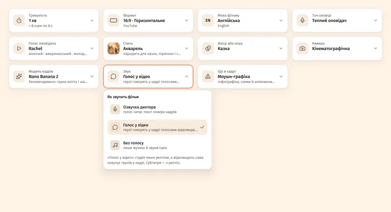
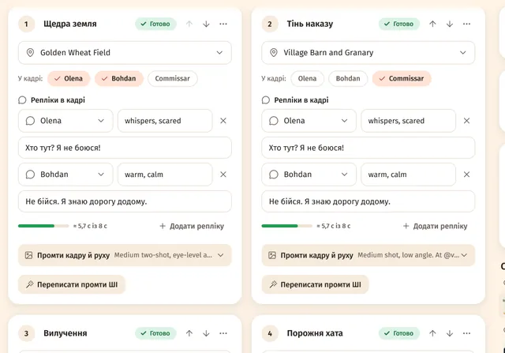
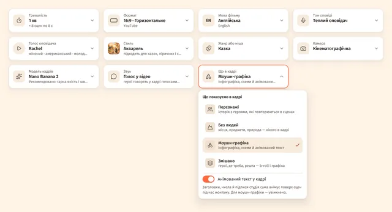
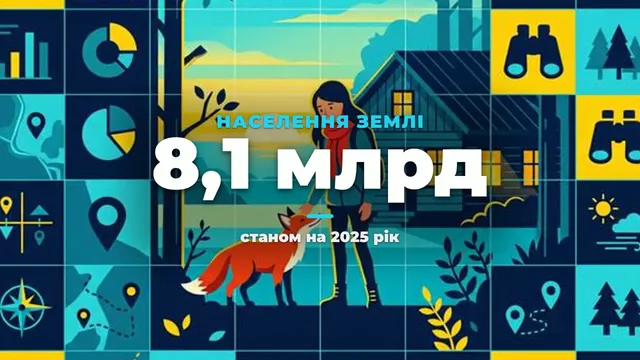
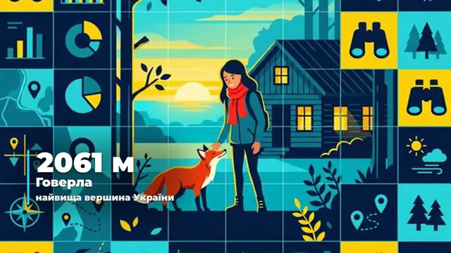

Зміст сторінки
Звук: три режими
Крок «Сценарій» → картка «Звук». Те саме є у вікні «Новий проєкт», у чипах під історією на Головній, у профілях і в Telegram-боті.
| Режим | Що відбувається |
|---|---|
| «Озвучка диктора» | Диктор читає текст поверх кадрів — як було завжди. |
| «Голос у відео» | Герої говорять прямо в кадрі. ШІ пише репліки, а відеомодель сама озвучує героїв. Окремого кроку озвучки немає, субтитри — з реплік. |
| «Без голосу» | Лише музика й звуки сцен. Замість тексту озвучки в сцені — «Підпис» для субтитрів. |

Голос у відео: крок за кроком
- Вибери відеомодель зі звуком. Налаштування → Підключення → «Відео»: Veo 3.1 або Omni Flash — через G-Labs, Google чи RoyalTechno.
- Крок «Сценарій» → «Звук» → «Голос у відео». Картка «Голос оповідача» вимкнеться — у героїв свої голоси у відео.
- «Створити план». У кожній сцені замість «Текст озвучки» — «Репліки в кадрі»: хто говорить (герой або «Голос за кадром»), як («пошепки, радісно…», англійською) і що звучить. До 8 реплік на сцену.
- Перевір довжину. Лічильник «≈ X с із Y с» під репліками скаже, якщо репліка довша за кліп, — скороти її.
- Опиши голоси. У картці героя — «Голос у відео (англ.)», у картці «Загальне» — «Голос за кадром (англ.)». Так відеомодель озвучить репліки.
- Далі як завжди: кадри → «Зняти відео» → монтаж. Звук кліпів грає на повну, музика під ним сама тихішає.

З «Динамічною довжиною сцен» (Налаштування → «Відео») кліп підганяється під репліки — від 4 до 10 секунд.
Які відеомоделі говорять
Голос дає сама відеомодель. Якщо вона знімає без звуку, студія попередить ще до зйомки.
| Відеомодель | «Голос у відео» |
|---|---|
| G-Labs (Veo 3.1, Omni Flash), Google (Gemini Omni Flash, Veo 3.1), RoyalTechno (omni-flash, veo-3.1), Sora 2 | так |
| Seedance 2.0, Grok Imagine, Kling, Wan та інші моделі свого API | залежить від моделі — спробуй одну сцену |
| Runway Gen-4, Luma Ray, MiniMax Hailuo, Seedance 1, Veo 2 | ні — кліпи без звуку |
Що в кадрі
Картка «Що в кадрі» поруч зі «Звуком»:
- «Персонажі» — герої, що повторюються в сценах.
- «Без людей» — місця, предмети, природа. У плані замість персонажів — «Об'єкти й мотиви», у кожному промті — «без людей». Твої фото героїв і предметів стають об'єктами.
- «Моушн-графіка» — інфографіка й анімований текст. Кадри — дизайнерські композиції з місцем під текст («Мотиви графіки», «Фони й локації»).
- «Змішано» — герої, b-roll і графіка.

Анімований текст у кадрі
Перемикач «Анімований текст у кадрі» — у картці «Що в кадрі»: заголовки, числа й підписи студія сама анімує поверх сцен під час монтажу. Для моушн-графіки він увімкнений сам, для інших режимів — вмикаєш ти.
- Увімкни «Анімований текст у кадрі» і створи план.
- У сцені з'явиться блок «Текст у кадрі»: «Заголовок (до 6 слів)», «Число чи факт: 73%», «Підпис (необов'язково)».
- Вибери анімацію: «Анімація: авто», «Поява», «Виїзд збоку», «Пружний «поп»», «Лічильник числа» або «Слово за словом». «Авто» — лічильник для числа, інакше поява.
- «Змонтувати відео» — текст з'явиться поверх сцени. Перезнімати кліп не треба.
ШІ ставить текст у сцени з ключовими фактами, а в моушн-графіці — у кожну. Текст стоїть унизу кадру, у моушн-графіці — по центру.


Нові стилі й жанри
Для цих режимів додано 4 стилі — тепер їх 71 — і 4 жанри — тепер 36:
- Стилі: «Моушн-графіка», «Кінетична типографіка» (категорія «Пояснювальні»), «Документальний b-roll», «Предметна зйомка» («Кіно й фото»).
- Жанри: «Пояснювальне відео», «Топ-список», «Огляд продукту», «Подорожі й місця».
Обмеження
- «Голос у відео» працює лише з відеомоделлю, що вміє звук. Голос героя ти описуєш словами — озвучує його сама модель.
- «Перекласти проєкт» перекладе й репліки, але кліпи з репліками треба перезняти: вони говорять мовою оригіналу (студія про це скаже).
- Позицію тексту в кадрі змінити не можна: унизу, а в моушн-графіці — по центру.
Питання
Чи можна змішати диктора й репліки героїв?
Ні, у проєкту один режим звуку. Для фільму з голосами героїв вибери «Голос у відео», а слова від автора напиши репліками «Голосу за кадром».
Субтитри в «Голосі у відео» — звідки?
З реплік: кожна стоїть усередині свого кліпу. Вигляд субтитрів — як завжди, на кроці «Монтаж».
Чи витрачає кредити анімований текст?
Ні. Текст малює сама студія під час монтажу, а «Змонтувати відео» кредитів не витрачає.